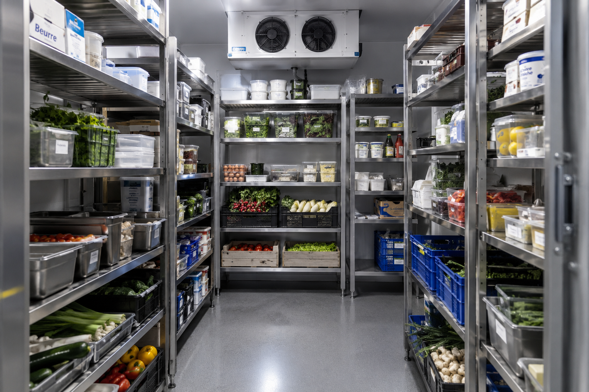
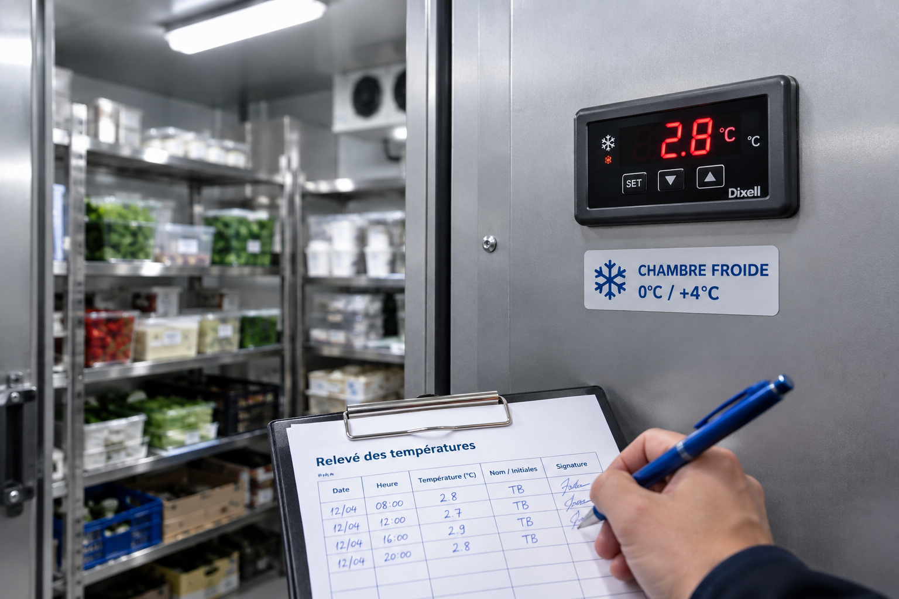

Chambre froide professionnelle 2026 : choisir, dimensionner, respecter les normes et entretenir
La chambre froide est le cœur de la chaîne du froid d’un restaurant. Mal choisie, elle coûte cher en électricité ; mal entretenue, elle tombe en panne un samedi soir ; mal suivie, elle devient le premier point relevé par l’inspecteur sanitaire. Ce guide détaille les types de chambres froides, la méthode pour la dimensionner, les prix à prévoir, les températures réglementaires, les nouvelles règles F-Gas sur les fluides frigorigènes, les obligations de sécurité et l’entretien au quotidien.

Les types de chambres froides
Positive ou négative
C’est le premier choix, et il dépend de ce que vous stockez :
- Chambre froide positive : température au-dessus de 0 °C, généralement réglée entre 0 et +4 °C. Elle accueille les viandes, poissons, produits laitiers, légumes, préparations maison et plats cuisinés.
- Chambre froide négative : entre -18 et -25 °C environ. Elle sert au stockage des produits surgelés et des préparations congelées.
La plupart des restaurants traditionnels ont besoin d’une chambre positive. La négative se justifie quand le volume de surgelés dépasse ce que peuvent contenir des armoires ou congélateurs coffres.
Modulaire, monobloc ou à groupe déporté
| Format | Principe | Pour qui |
|---|---|---|
| Modulaire | Panneaux isothermes (sandwich polyuréthane) assemblés sur place, démontables | La grande majorité des restaurants : rapide à installer, adaptable, revendable |
| Groupe monobloc | Le groupe frigorifique est un seul bloc fixé sur la paroi ou le plafond de la chambre | Petites et moyennes chambres, installation simple et moins coûteuse |
| Groupe split (à distance) | Le condenseur est déporté à l’extérieur ou dans un local technique | Chambres négatives, gros volumes, cuisines où la chaleur rejetée gêne |
| Maçonnée / sur mesure | Construite dans le bâti, isolation intégrée | Projets spécifiques ou contraintes de local fortes |
Bien dimensionner sa chambre froide
Il n’existe pas de règle officielle du type « X m³ par couvert » : le bon volume dépend de votre carte, de la fréquence de vos livraisons et de votre part de produits frais. Une chambre trop petite oblige à surcharger les étagères (le froid circule mal) ; une chambre trop grande consomme pour rien. La méthode la plus fiable consiste à partir de vos flux réels.
La méthode en 4 étapes
- Calculez votre volume d’achats frais entre deux livraisons (en kg ou en nombre de caisses), en vous basant sur vos bons de livraison des semaines les plus chargées.
- Ajoutez les préparations maison stockées avant service : fonds, sauces, mises en place, desserts.
- Prévoyez une marge pour la circulation de l’air : les produits ne doivent ni toucher les parois ni bloquer l’évaporateur, et rien ne doit être posé au sol.
- Intégrez la croissance : un service du midi en plus ou un nouveau menu peut faire grimper vos besoins. Un modulaire peut s’agrandir, un monobloc rarement.
Avec ces éléments, un frigoriste calculera le volume et surtout la puissance frigorifique adaptée : elle dépend aussi du nombre d’ouvertures de porte, de la température de la pièce et de la quantité de produits chauds ou tièdes que vous y entrez.
Épaisseur des panneaux
Les panneaux isothermes en polyuréthane existent de 60 à 200 mm. En pratique, on retrouve couramment :
| Usage | Épaisseur courante |
|---|---|
| Chambre positive (0/+4 °C) | 60 à 80 mm |
| Chambre négative (-18/-25 °C) | 100 à 120 mm et plus |
Repères d’usage courant, à confirmer avec le fabricant selon la température de consigne et l’emplacement de la chambre. Une isolation plus épaisse coûte plus cher à l’achat mais réduit la facture d’électricité pendant toute la durée de vie de l’équipement.
Prix : combien prévoir ?
Les prix varient énormément selon le volume, le type de groupe et le niveau de finition. Voici les fourchettes publiées par les distributeurs spécialisés :
| Type | Fourchette indicative (matériel) |
|---|---|
| Chambre froide positive | de 1 500 € à plus de 20 000 € |
| Chambre froide négative | de 2 000 € à 25 000 € |
| Chambre modulaire | à partir de 3 000 € |
| Chambre sur mesure | à partir de 8 000 € |
| Installation complète (pose, mise en service) | à partir de 5 000 € |
| Remplacement d’un groupe (moteur) | à partir de 1 500 € en positif, 2 000 à 5 000 € en négatif |
Source : guides de prix de distributeurs spécialisés (Hellopro). Fourchettes larges et indicatives : seul un devis de frigoriste établi sur votre local, votre volume et votre usage donne un prix fiable. Demandez au moins trois devis comparables (même volume, même fluide, même garantie).
Le coût d’usage : l’électricité
Une chambre froide tourne 24 h/24. À titre d’ordre de grandeur, un distributeur estime pour une chambre positive :
| Volume (positif) | Puissance | Coût annuel estimé |
|---|---|---|
| 1,5 à 5 m³ | 300 à 850 W | 500 à 1 500 € |
| 7 à 20 m³ | 1 000 à 2 000 W | 1 500 à plus de 3 000 € |
Estimation calculée sur un prix de 0,17 € TTC/kWh, inférieur à la plupart des tarifs professionnels actuels : votre coût réel sera vraisemblablement plus élevé. Une chambre négative consomme sensiblement plus.
Cet investissement s’intègre dans votre business plan à l’ouverture, et pèse ensuite sur vos ratios de charges fixes. Certaines aides à la création peuvent contribuer au financement de l’équipement.

Températures réglementaires et relevés
Les températures de conservation sont fixées par l’arrêté du 21 décembre 2009 relatif aux règles sanitaires applicables aux activités de commerce de détail. Quelques repères clés pour une chambre froide :
| Denrée | Température maximale |
|---|---|
| Viandes hachées | +2 °C |
| Poissons frais, produits de la pêche | Température de la glace fondante (0 à +2 °C) |
| Volailles, lapins | +4 °C |
| Produits surgelés | -18 °C |
Extrait simplifié : les températures par catégorie de denrées sont détaillées dans notre guide des températures de conservation. Une chambre positive qui mélange plusieurs catégories doit être réglée pour respecter la contrainte la plus stricte des produits qu’elle contient.
Les relevés de température
Le suivi des températures fait partie de votre Plan de Maîtrise Sanitaire. Le texte ne fixe pas un nombre de relevés unique pour tous les établissements, mais la pratique recommandée est d’au moins deux relevés par jour, à l’ouverture et à la fermeture, consignés et signés.
La solution la plus fiable reste le capteur connecté, qui enregistre la température en continu, y compris la nuit et le week-end, et envoie une alerte dès qu’une dérive apparaît. C’est souvent ce qui permet de sauver un stock lors d’une panne nocturne. Un back-office comme Komia propose ces capteurs en option de son module HACCP : les relevés alimentent directement le registre numérique, prêt à être présenté lors d’un contrôle sanitaire.
Notre checklist HACCP gratuite couvre les relevés de température, la réception des marchandises, le nettoyage et la traçabilité — en une seule fiche imprimable.
Télécharger la checklist →Fluides frigorigènes : ce que change le règlement F-Gas
Le règlement UE 2024/573, dit F-Gas, applicable depuis le 11 mars 2024, a remplacé le règlement 517/2014. Il accélère la sortie des gaz fluorés à fort potentiel de réchauffement planétaire (PRG). Pour un restaurateur, l’enjeu est simple : un équipement acheté aujourd’hui doit pouvoir être entretenu et rechargé dans dix ans.
Les échéances à connaître
| Date | Mesure (selon les synthèses professionnelles) |
|---|---|
| 1er janvier 2025 | Interdiction de mise sur le marché des équipements de froid commercial autonomes utilisant un fluide de PRG ≥ 150 |
| 1er janvier 2030 | Restrictions étendues aux installations fixes de réfrigération : fluides de PRG < 150 |
| 1er janvier 2032 | Interdiction de recharger avec des fluides de PRG ≥ 750 |
Calendrier résumé d’après des sources professionnelles (FFB, réseaux CEE). Le classement exact d’une chambre froide à groupe monobloc (équipement « autonome » ou installation « fixe ») et les éventuelles dérogations relèvent de l’annexe IV du règlement : faites confirmer la conformité de votre projet par écrit par votre frigoriste.
Quel fluide choisir pour un équipement neuf ?
- R290 (propane) : PRG très faible, très répandu sur les groupes monoblocs récents.
- R744 (CO2) : PRG de 1, adapté aux installations plus importantes.
- À éviter pour du neuf : le R404A (PRG proche de 4 000) et, au regard des échéances 2030, les HFC de substitution à PRG élevé comme le R449A.
Contrôle d’étanchéité et intervenants
Le contrôle d’étanchéité est obligatoire selon la quantité de fluide exprimée en tonnes équivalent CO2 : annuel de 5 à 50 t, semestriel de 50 à 500 t, trimestriel au-delà (intervalles doublés en cas de système de détection permanente). La plupart des petites chambres froides de restaurant restent sous le seuil de 5 t, mais cela dépend du fluide et de la charge : demandez le calcul à votre installateur. Toute intervention sur le circuit doit être réalisée par une entreprise titulaire d’une attestation de capacité pour la manipulation des fluides frigorigènes, et les documents d’intervention se conservent 5 ans.
Sécurité : les obligations à respecter
Le risque d’enfermement est réel. L’arrêté du 30 septembre 1957 relatif aux chambres froides fixe des obligations précises :
| Obligation | Concerne |
|---|---|
| Porte pouvant être ouverte manuellement de l’intérieur | Toutes les chambres froides |
| Avertisseur sonore actionnable de l’intérieur | Chambres de plus de 10 m³ |
| Voyant extérieur signalant l’éclairage intérieur allumé | Installations neuves de plus de 10 m³ |
Au-delà du texte, quelques réflexes relèvent de l’obligation générale de sécurité de l’employeur : sol antidérapant et sec, éclairage suffisant, étagères stables et charges lourdes en bas, équipements de protection pour le personnel qui travaille longtemps en négatif.
Entretien et économies d’énergie
Le planning d’entretien
| Tâche | Fréquence conseillée |
|---|---|
| Relevé de température | Au moins 2 fois par jour (ou en continu par capteur) |
| Rangement, contrôle des DLC, rien au sol | Quotidien |
| Nettoyage des sols, poignées et étagères | Selon votre plan de nettoyage, au minimum hebdomadaire |
| Nettoyage du condenseur (poussière, graisse) | Mensuel |
| Contrôle visuel des joints de porte et de l’évaporateur (givre) | Mensuel |
| Visite de maintenance par un frigoriste | Annuelle (recommandée) |
La maintenance annuelle n’est pas une obligation générale (hors contrôle d’étanchéité F-Gas quand il s’applique), mais elle est recommandée par les fabricants et prévient la majorité des pannes. Intégrez ces tâches à votre plan de nettoyage dans le PMS.
Réduire la consommation
- Limiter les ouvertures de porte : regroupez les sorties de produits, préparez vos listes avant d’entrer.
- Ne jamais entrer de produits chauds : refroidissez-les d’abord en cellule de refroidissement. C’est aussi une exigence sanitaire.
- Garder un condenseur propre et ventilé : un condenseur encrassé force le compresseur et use le groupe.
- Passer à l’éclairage LED, qui chauffe peu l’intérieur de la chambre.
- Surveiller les joints : un joint abîmé laisse entrer l’air chaud et provoque du givre.
Des fiches de Certificats d’Économies d’Énergie (CEE) existent pour certaines améliorations des installations de froid commercial (récupération de chaleur sur groupe froid, régulation de pression). Elles visent surtout les installations d’une certaine taille : renseignez-vous auprès de votre installateur sur votre éligibilité.
Que faire en cas de panne ?
Une panne de chambre froide met en jeu à la fois votre stock et la sécurité sanitaire. Les bons réflexes :
- Garder la porte fermée pour conserver le froid le plus longtemps possible.
- Appeler immédiatement votre frigoriste (ayez son numéro d’astreinte affiché près de la chambre).
- Noter l’heure de constatation et relever la température de l’enceinte et des produits.
- Transférer les denrées encore à bonne température dans une autre enceinte froide.
- Évaluer les produits ayant dépassé les températures réglementaires selon les procédures de votre PMS, et écarter ceux dont la sécurité n’est pas garantie. En cas de doute, ne prenez pas de risque.
- Consigner la panne, les températures et les décisions prises dans votre registre HACCP.
Questions fréquentes sur les chambres froides professionnelles
Quelle est la différence entre une chambre froide positive et négative ?
Une chambre froide positive maintient une température supérieure à 0 °C, généralement entre 0 et +4 °C, pour les produits frais. Une chambre froide négative fonctionne entre -18 et -25 °C environ pour les surgelés. La négative demande des panneaux plus épais et un groupe plus puissant, ce qui la rend plus chère à l’achat et à l’usage.
Combien coûte une chambre froide professionnelle ?
Les fourchettes publiées par les distributeurs vont d’environ 1 500 € pour une petite chambre positive d’entrée de gamme à plus de 20 000 € pour du sur-mesure. Une chambre négative démarre autour de 2 000 € pour un petit modèle monobloc. Ajoutez la pose, souvent à partir de 5 000 €. Seul un devis de frigoriste donne un prix fiable.
Une chambre froide doit-elle pouvoir s’ouvrir de l’intérieur ?
Oui. L’arrêté du 30 septembre 1957 impose que les portes puissent être ouvertes manuellement de l’intérieur. Au-delà de 10 m³, un avertisseur sonore actionnable de l’intérieur est aussi obligatoire, et les installations neuves de cette taille doivent avoir un voyant extérieur signalant l’éclairage intérieur allumé.
Que change le règlement F-Gas pour une chambre froide de restaurant ?
Le règlement UE 2024/573 accélère la sortie des fluides frigorigènes à fort PRG. Depuis 2025, les équipements autonomes utilisant un fluide de PRG ≥ 150 ne peuvent plus être mis sur le marché, et des restrictions s’étendent aux installations fixes à l’horizon 2030. Pour du neuf, privilégiez le R290 ou le CO2, et faites confirmer la conformité par votre frigoriste.
À quelle fréquence relever la température d’une chambre froide ?
Le suivi des températures est obligatoire dans le cadre du PMS, sans nombre de relevés fixé pour tous. La pratique recommandée est d’au moins deux relevés par jour, à l’ouverture et à la fermeture. Les capteurs connectés, qui enregistrent en continu et alertent en cas de dérive, sont la solution la plus fiable.
Que faire en cas de panne de chambre froide ?
Gardez la porte fermée, appelez immédiatement un frigoriste, notez l’heure et relevez les températures. Transférez les denrées encore à bonne température dans une autre enceinte froide. Évaluez les produits ayant dépassé les températures réglementaires selon votre PMS et écartez-les en cas de doute. Consignez tout dans votre registre HACCP.
Quelle épaisseur de panneaux choisir pour une chambre froide ?
Les panneaux existent de 60 à 200 mm. Les chambres positives sont couramment équipées de panneaux de 60 à 80 mm, les négatives de 100 à 120 mm ou plus. Une isolation plus épaisse coûte plus cher à l’achat mais réduit la consommation électrique sur toute la durée de vie de l’équipement.